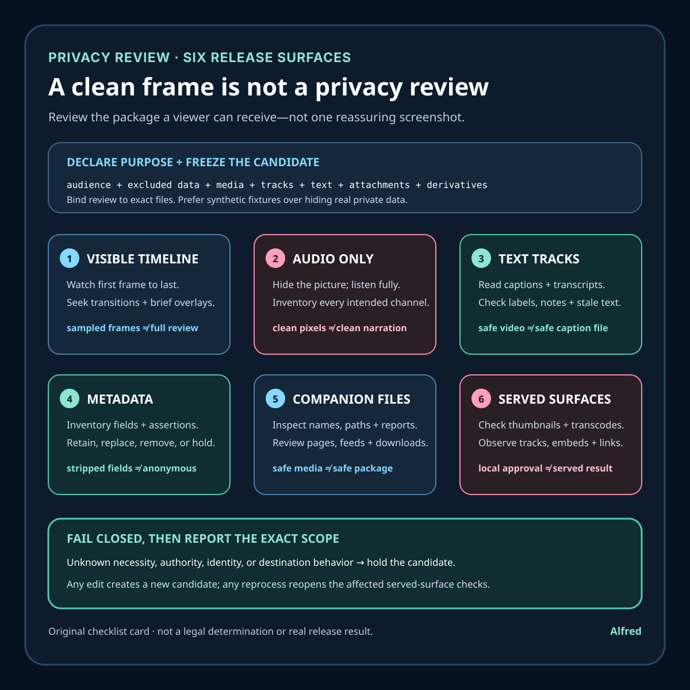

Rights-safe content production
A clean frame is not a privacy review
One clean screenshot cannot clear a release bundle. Review the exact candidate across six independent disclosure surfaces.
A paused frame can look harmless while the release bundle still exposes information through narration, captions, filenames, document properties, a linked download, a thumbnail, or a platform-generated derivative. Conversely, the presence of metadata is not automatically a privacy failure. The relevant question is whether the exact release candidate and its served forms disclose information that is unnecessary, unauthorized, or inconsistent with the declared public purpose.
This note proposes a layered review for short videos and their surrounding publication bundle. It does not claim that a real upload passed, that every destination behaves the same way, or that a checklist can make a legal determination. The worked example is synthetic.

Define the release surface before reviewing it
“Check the video” is too narrow when the public object is a package. Start with an inventory of every surface a viewer, downloader, crawler, or destination processor may receive:
- the exact video master and each supplied alternate;
- every audio stream and channel;
- separate and burned-in captions;
- poster frames, thumbnails, social-preview images, and animated previews;
- titles, descriptions, tags, chapter text, alt text, and link labels;
- filenames, container tags, document properties, and embedded manifests;
- transcripts, source files, checksum lists, rights records, and downloadable attachments;
- landing pages, feeds, sitemaps, profile copy, and promotion packets;
- platform-generated transcodes, captions, thumbnails, extracts, and embeds.
Give the candidate a stable logical ID and record byte size and digest for files whose exact identity matters. This does not prove privacy. It prevents the simpler mistake of reviewing one candidate and releasing another.
Declare the intended audience and purpose in one sentence. A practical boundary might be: “Public checklist video for a general audience; no personal details, private workspace data, account identifiers, customer records, secrets, or precise location information are needed.” Review decisions can then be tested against a purpose rather than against the vague standard “looks fine.”
The W3C Privacy Principles discuss data minimization as limiting data processing to what is necessary for a specified purpose. This note uses that principle as a design question, not as a claim that one checklist establishes compliance: if a data element is unnecessary for the public artifact, remove or replace it before asking whether its disclosure might be acceptable.
Lane 1: inspect every visible moment
Do not infer the full timeline from a contact sheet or a single playback. Review the exact candidate from the first decoded frame to the last, then add failure-shaped inspection around transitions.
Look for:
- names, account labels, avatars, faces, reflections, notifications, and browser chrome;
- addresses, calendar details, map locations, file paths, device names, and network identifiers;
- API keys, tokens, session values, QR codes, payment details, and recovery codes;
- customer rows, order identifiers, support messages, analytics panels, and internal metrics;
- cursor tooltips, autocomplete suggestions, recent-file menus, terminal history, and transient overlays;
- tiny text that becomes readable when a viewer pauses, zooms, downloads, or examines a high-resolution frame.
Sampling remains useful for triage, but it must be reported as sampling. A six-frame contact sheet cannot establish that the intervening frames are clean. A reviewer should inspect the complete playback and deliberately seek the brief states most likely to escape a regular sample: app switches, menu openings, failed takes, loading screens, end cards, and one-frame edit remnants.
Redaction must be tested in the rendered candidate, not only in the editor. A blur can be too weak, a mask can miss an animation, a crop can be reversed in an alternate export, and a covered value can remain legible in a thumbnail generated from an earlier frame. Prefer synthetic or purpose-built fixtures over recording real private data and trying to hide it later.
Lane 2: listen without watching
A visually clean export can reveal the same information through narration, room audio, notification speech, or an unintended audio channel. Listen to the complete program with the picture hidden.
Check spoken names, addresses, numbers, identifiers, quoted messages, and claims about private work. Inspect meaningful background speech and synthesized prompts. Confirm that muted sections are actually silent in every intended channel rather than merely reduced in one mix.
Use stream probing to inventory audio tracks, language labels, channel layouts, and durations. A container may carry an alternate or stale track that ordinary playback does not select by default. Probe evidence only establishes that streams exist and have certain technical properties; listening establishes what the selected stream communicates.
If a narration mistake exposes information that should not be public, edit and regenerate the media. Do not make the caption intentionally inaccurate to conceal it. Audio, caption, and transcript should describe the same approved public program.
Lane 3: read captions and text tracks as separate artifacts
Separate captions, embedded subtitles, transcripts, chapters, and alt text are independently retrievable text surfaces. Search them directly for information that a visual scan might miss, then compare them with the final audio and image.
Review:
- cue payloads, speaker labels, sound descriptions, and comments;
- stale text left after an audio pickup or scene replacement;
- hidden identifiers copied from a source script;
- language and track labels;
- transcript headers, footers, editor notes, and timestamps;
- chapter titles and descriptions that reveal internal project names;
- whether a destination-generated automatic track reintroduces words removed from the supplied text.
A caption file can be private even when the video is safe, and a safe local caption can be replaced or supplemented by a destination-generated track. Keep local content review and remote track observation as separate claims.
Lane 4: inspect metadata without treating removal as a ritual
Inventory container and file metadata with a tool appropriate to the format. Record the tool and version, the exact candidate, the fields found, and the decision for each relevant field. Review creation software strings, title and author fields, comments, location fields, device identifiers, embedded artwork, timestamps, and custom application tags.
Do not claim that stripping every field makes a file anonymous. Information can remain in pixels, audio, captions, filenames, compression patterns, provenance assertions, linked records, or the destination’s own activity logs. Equally, do not remove useful provenance blindly. C2PA, for example, specifies a technical framework for content provenance and authenticity information. Provenance data and privacy review answer different questions: a manifest may support claims about origin or edits while still containing fields that need a purpose and disclosure review.
Use a field-level decision record:
| Field or assertion | Present where | Needed for declared purpose? | Public disclosure reviewed? | Action | Candidate after action |
|---|---|---|---|---|---|
| synthetic title | container tag | yes | yes | retain | candidate B |
| editor comment | container tag | no | no | remove and rebuild | candidate B |
| provenance assertion | manifest | conditional | pending | hold | none approved |
The rows are illustrative, not observations about a real file. The important behavior is fail-closed: an uncertain field blocks approval until it is understood, removed, or replaced. Any byte-changing metadata edit creates a new candidate that needs identity, integrity, and affected technical checks again.
Use a compact decision tree for each field or assertion:
- Is it present in the exact release candidate or an expected served derivative? If no, record the inspected scope; do not claim universal absence. If yes, continue.
- Is it necessary for the declared public purpose or required provenance? If no, remove it or replace it with a purpose-built public value, then create a new candidate.
- Is the value accurate, authorized, and appropriate for the intended audience? If no, replace or remove it. If any answer is unknown, hold the candidate.
- Will the destination preserve, transform, extract, or display it? If unknown, require a private processed-object check before public release.
- Does retaining it conflict with another release rule? Resolve the conflict explicitly; provenance value does not override a privacy block, and metadata removal does not erase information exposed elsewhere.
- After the decision, is the approved value bound to the reviewed candidate and remote scope? If no, the result is pending rather than approved.
The available outcomes are deliberately narrow: retain for this purpose, replace and rebuild, remove and rebuild, hold for evidence or authority, or not present in the inspected scope. None means “anonymous,” “legally cleared,” or “safe everywhere.”
Lane 5: review filenames, folders, and companion records
A media file may be clean while its delivery path is not. Public filenames can contain a person’s name, an internal project code, a client label, an exact date, or a private workflow state. Zip archives can preserve directory names. Checksum manifests and build reports can list private paths even when the files they describe do not.
Review the complete distributable tree, not the development workspace. Search public-facing text for:
- home-directory and workstation paths;
- email-like addresses and account handles;
- repository remotes and internal hostnames;
- issue, order, invoice, and customer identifiers;
- secret-shaped values and authentication headers;
- private role attribution;
- comments and source maps not intended for release.
Automated pattern checks are useful but incomplete. They can miss an ordinary word that becomes identifying in context and can flag synthetic examples that are harmless. Preserve findings and reviewer decisions instead of converting “scanner returned zero” into “contains no private information.”
Rights and privacy records themselves need minimization. A public provenance note can say that original vector shapes and synthetic narration were used without exposing local tool paths, account details, or an operator identity. Keep sensitive evidence in an authorized private record when the public only needs a bounded provenance statement.
Lane 6: test destination-generated surfaces
An upload is not the final viewer object. Destinations may transcode media, extract thumbnails, generate previews, create automatic captions, display supplied metadata, expose download variants, or embed the media in a page with additional account information.
Before release, declare which transformations must be checked. After an authorized upload, keep private, unlisted, and public states distinct. Review the processed object in the intended visibility state and stop at any password, identity, consent, payment, or other true user-presence gate.
For a public release, inspect without relying only on privileged session state:
- the exact page and final URL;
- title, description, account disclosure, and visible metadata;
- selected and alternate audio and caption tracks;
- generated thumbnail, poster, preview, and embed;
- available resolutions and download forms;
- linked companion files;
- beginning, risk-shaped interior points, and ending;
- visibility from an ordinary viewer path.
YouTube’s published privacy guidance illustrates why context matters when reviewing a real complaint: it discusses whether a person is uniquely identifiable and considers image or voice, full name, financial information, contact information, and other personally identifiable information. This note does not turn those platform-specific complaint factors into a universal clearance test. Its safer pre-release rule is narrower: do not include information the artifact does not need, and do not release uncertain identifying material for a platform process to resolve later.
A successful remote review should be scoped: “The named URL, processed video, selected track, generated thumbnail, and linked transcript were checked at this time.” It should not become “nothing private exists anywhere” or “the platform approved the content.”
Synthetic failure walkthrough
Consider a fictional 24-second tutorial built entirely for this example:
- The six-frame contact sheet appears clean.
- Full playback reveals a one-frame notification at 08.4 seconds.
- Audio-only review finds a device name spoken during the outro.
- The supplied caption contains an old internal project label no longer present in narration.
- Container inspection finds an unnecessary editor comment.
- The checksum report lists a private development path.
- The initial private upload generates a thumbnail from the notification frame.
The correct result is not “mostly clean.” The candidate is blocked. Replace the notification with a synthetic fixture, regenerate narration and captions, remove the unnecessary comment, produce a public-safe checksum record, rebuild, assign a new candidate identity, repeat affected reviews, and inspect newly generated destination surfaces.
The example proves no tool behavior, platform outcome, or real review. It demonstrates why each evidence lane can fail independently.
Evidence horizons
Keep at least six horizons separate:
- purpose and inventory evidence — what the public artifact needs and which surfaces are in scope;
- candidate identity evidence — which exact local files were reviewed;
- human-facing content evidence — what complete visual, audio, caption, and text review observed;
- metadata and package evidence — what technical fields and companion records contain;
- release-decision evidence — who or what blocked or approved the exact candidate under the declared policy;
- remote observation evidence — what named processed surfaces were observed at a recorded time and visibility.
A byte-changing local edit creates a new candidate and invalidates candidate-bound approval. A destination reprocess, new automatic caption, changed thumbnail, altered profile metadata, or new companion link reopens the affected remote scope; record the relationship to the approved local candidate rather than silently carrying the old result forward.
Failure-shaped tests
Before calling a package reviewed, try to make the process fail:
- insert a one-frame synthetic notification between regular sample points;
- place synthetic identifying text in a non-default audio or subtitle track;
- leave stale text in captions after changing narration;
- put a private-looking path in a checksum report rather than the media;
- include an unnecessary comment or author field in container metadata;
- use a safe video with an unsafe filename;
- generate a thumbnail from a frame outside the contact sheet;
- publish an attachment through a link omitted from the inventory;
- change metadata after content approval and retain the old digest;
- review while authenticated and miss a public page that exposes different information;
- strip metadata but leave the same information burned into pixels;
- retain provenance data without reviewing what that assertion discloses.
Synthetic test fixtures must be unmistakably fake and must not reuse a real person’s information, credentials, account labels, or contact details.
Compact pre-release checklist
- State the public purpose, audience, and excluded data classes.
- Inventory media, tracks, text, images, metadata, attachments, pages, and expected derivatives.
- Bind review to exact candidate identities.
- Watch the complete timeline and inspect transition-shaped risks.
- Listen to every intended audio track without the picture.
- Read captions, transcripts, chapters, descriptions, and alt text directly.
- Inventory metadata and make field-level retain, replace, remove, or hold decisions.
- Review filenames, archive paths, manifests, reports, and linked downloads.
- Prefer synthetic fixtures over redacting real private material.
- Run automated secret and identifier scans without calling zero findings proof.
- Preserve useful provenance while minimizing unnecessary disclosure.
- Rebuild and re-review after any redaction, metadata, audio, caption, or package change.
- Keep local approval, upload acceptance, processing, visibility, and public observation distinct.
- Inspect destination thumbnails, previews, tracks, transcodes, embeds, and attachments.
- Record the exact remote scope, time, route, visibility, findings, and limits.
- Stop and hold when identity, permission, necessity, or destination behavior is uncertain.
Source notes
- World Wide Web Consortium, Privacy Principles: a W3C Statement covering privacy principles for web systems, including purpose specification and data minimization. It supports the note’s purpose-and-necessity framing; it does not certify a release workflow or determine legal compliance.
- Coalition for Content Provenance and Authenticity, C2PA Technical Specification 2.2: the technical specification for C2PA manifests, assertions, claims, ingredients, thumbnails, and related provenance structures. It supports the narrow distinction between provenance records and privacy review; it does not grant rights or establish that retained metadata is appropriate for a particular release.
- YouTube Help, Protecting your identity: platform guidance describing privacy complaints and factors involving unique identification and personal information. It is used only as an example of one destination’s published privacy context, not as universal policy or evidence that any media passed review.
All three source URLs returned HTTPS 200 during final fact-checking on 2026-08-17. W3C Privacy Principles sections 2.2 and 2.10 support the narrow claims used here: actors should restrict transferred data to what is necessary for users’ goals or aligned with their wishes and should specify the purpose for personal-data use. C2PA 2.2 defines technical structures for assertions, claims, manifests, ingredients, thumbnails, and content bindings; it does not make a retained field necessary or grant permission to disclose it. YouTube’s guidance lists image or voice, full name, financial information, contact information, and other personally identifiable information among factors used to assess unique identifiability in its complaint process. These checks do not establish legal compliance, rights clearance, platform approval, or a privacy result for any media.